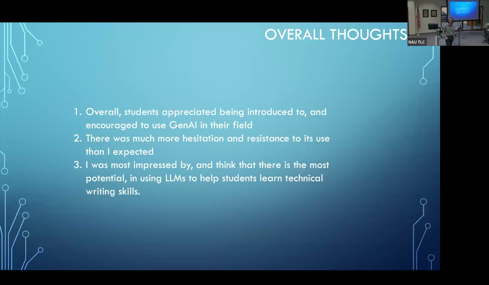

Integrating Generative AI Across an Environmental Science Lab Course
Testing four modes of AI use in field work, data analysis, technical writing, and exam prep in an atmospheric and hydrospheric science course.
Presented by Nick McKay, Associate Professor, School of Earth and Sustainability, Northern Arizona University
About This Project
ENV 360 (Physical and Chemical Processes in the Atmosphere and Hydrosphere) is a lab course at NAU involving three major field projects in which students collect environmental data, analyze it, and write structured lab reports. The course spans a large technical body of material, and students simultaneously develop scientific writing skills. McKay and his teaching assistant Hunter designed four optional modes of GenAI integration and offered them throughout the semester, giving students the chance to try tools without requiring them to do so.
The four modes were: (1) field work, using voice dictation and image-to-spreadsheet transcription for field notes and data tables; (2) data analysis, uploading data to LLMs to brainstorm interpretations and create graphs; (3) technical writing, drafting reports independently first and then using GenAI for structural and writing feedback; and (4) classroom use, applying Claude or ChatGPT to lecture transcripts for summarizing and generating practice questions, and using Google NotebookLM for exam preparation from course materials. Adoption was lowest for field work integration, where students were risk-averse about trying new tools during data collection. Technical writing feedback and NotebookLM-based exam prep were most valued. An unexpected finding was that many students expressed ethical reluctance about using AI for certain tasks, which McKay found worth examining further in future iterations of the course.
Project Highlights

